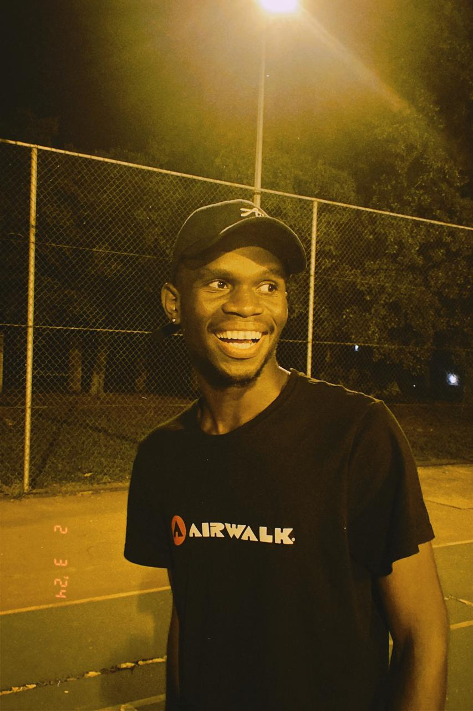
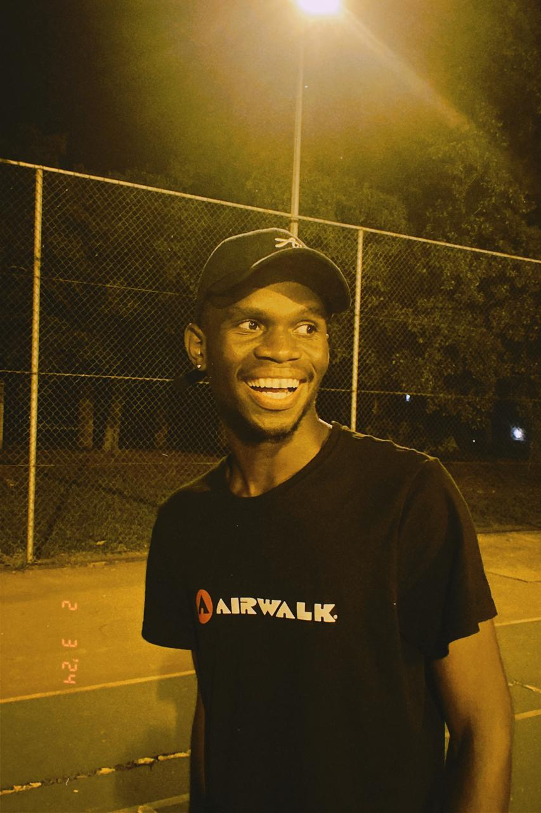

Who I Am
I am a Civil Engineering student at the prestigious Vaal University of Technology in South Africa, passionate about designing and constructing safe, efficient, and forward-thinking structures. Beyond engineering, I am a Google IT Support Professional and a certified Web Developer from Michigan University, equipping me with expertise in problem-solving, technology, and digital innovation. Additionally, I have completed a Computer Science course at Harvard University, strengthening my foundation in computational thinking, algorithms, and software development. With a diverse skill set spanning engineering, IT, and web development, I thrive on tackling complex challenges, optimizing systems, and delivering impactful solutions across multiple domains. Whether it’s designing infrastructure, troubleshooting technical issues, or crafting cutting-edge applications, I bring a solutions-driven mindset and a relentless passion for innovation. After all, problem-solving is my key, and I’m always ready to hand out a spare. Now, if only I could unlock the perfect chess strategy—or maybe even FIFA instead. For the love of the game!
- I have a keen eye for detail and a strong analytical mindset.
- I enjoy collaborating with teams and sharing knowledge to drive success.
- I am always eager to embrace new technologies and industry trends.
- I believe in continuous learning and self-improvement to stay ahead in my field.
- In my free time, I enjoy problem-solving challenges, gaming, and exploring creative projects.
My Gallery
 


Contact Me
Phone: 079 130 8125
Email: mpholincoln37@gmail.com